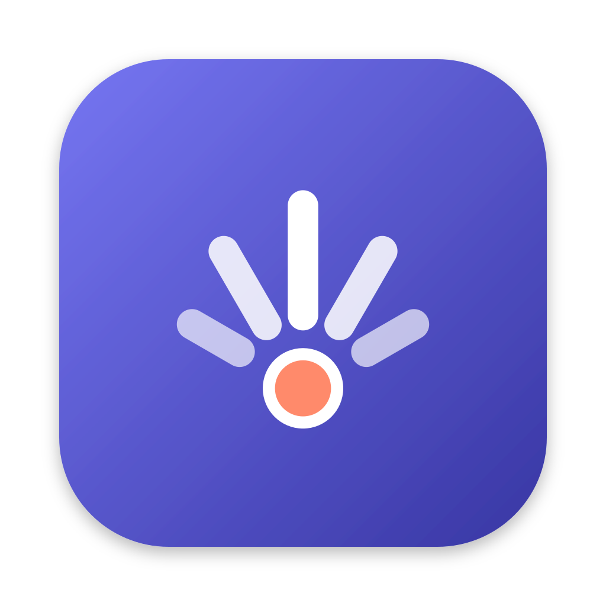
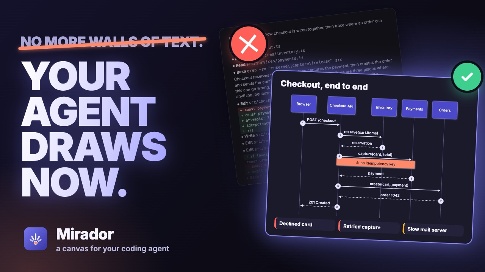
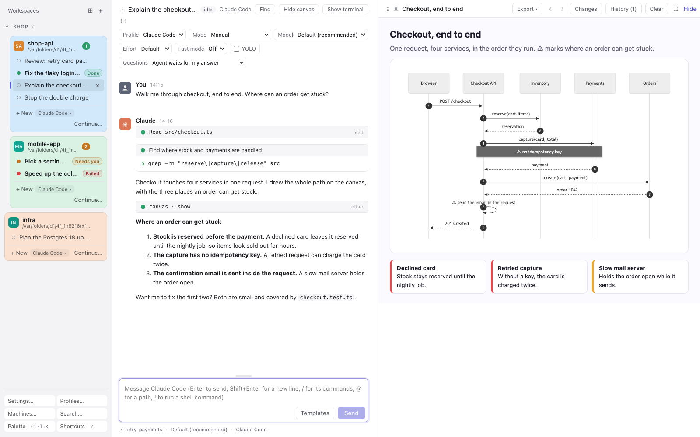
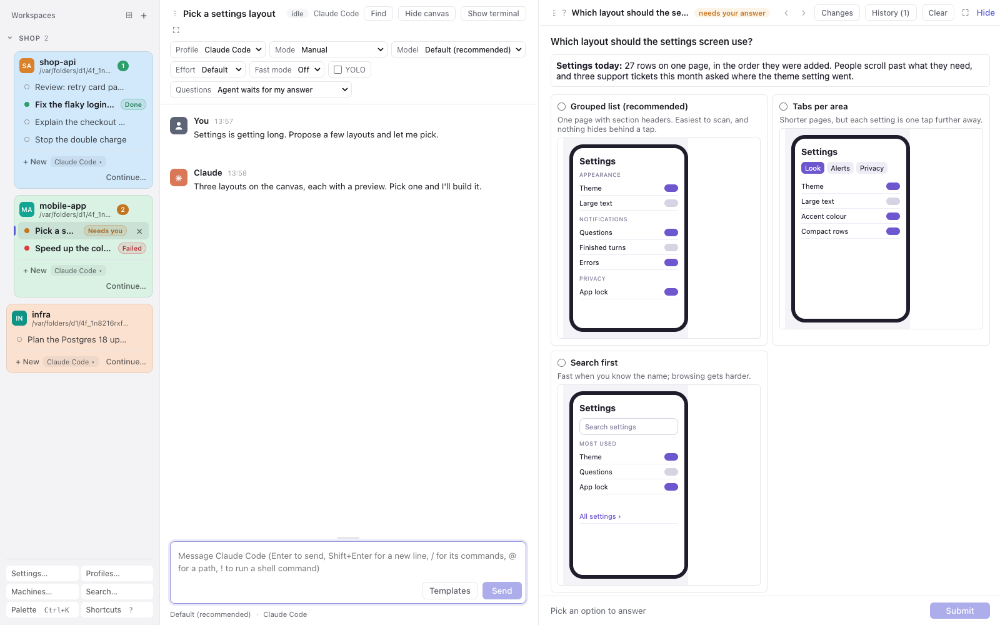
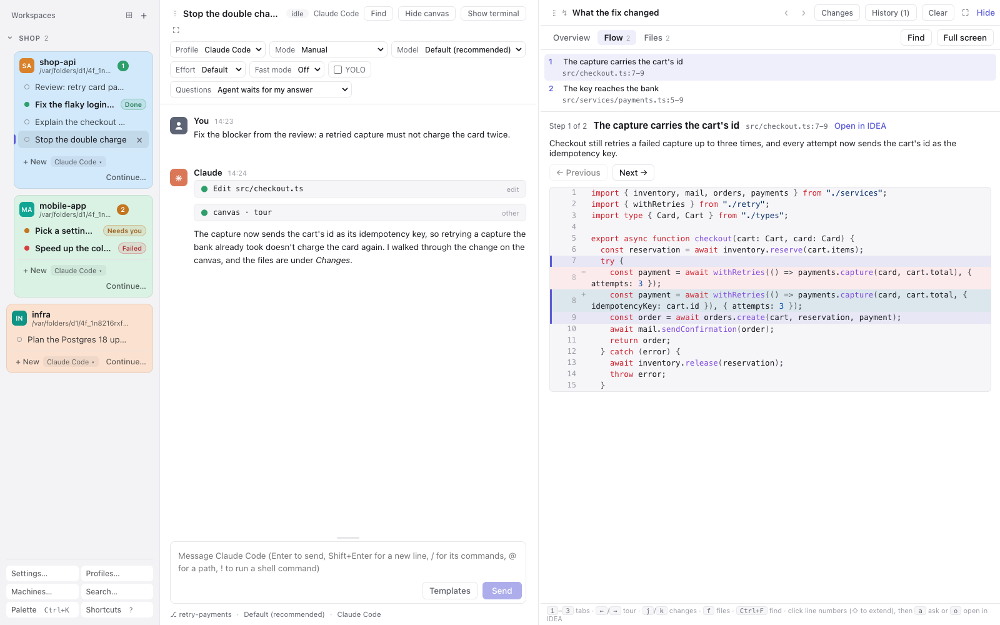
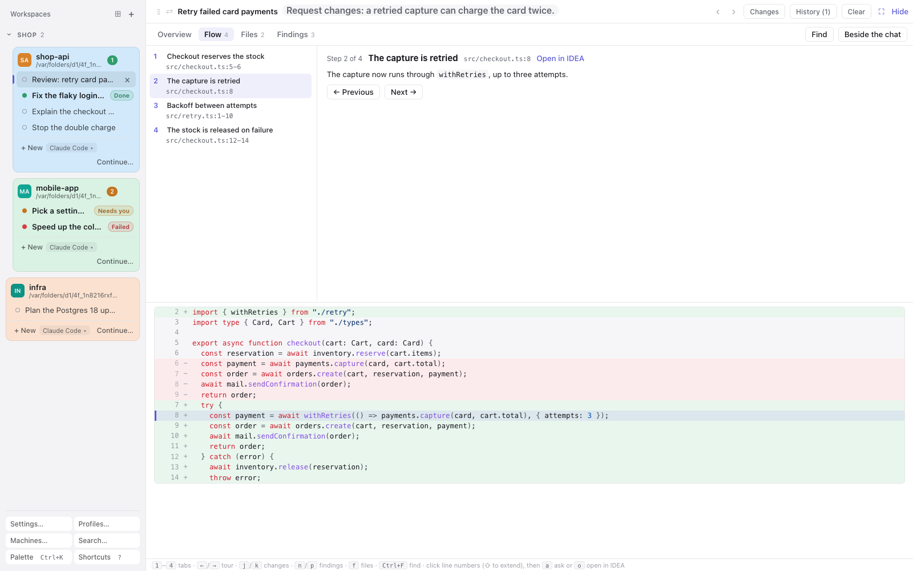

ESP32 · ESPHome · Home Assistant
What I most like to play with
ESP32 boards around the house, all reporting to Home Assistant through ESPHome: the Zehnder ventilation, a StackChan robot, a sourdough lid and an M5Stack Dial.
Principal Software Engineer at Cloudera · Budapest
I'm Péter. At Cloudera I keep customers' clusters running on AWS, Azure and GCP, around the clock. In my own time I make Mirador, a canvas where your coding agent draws what it means instead of writing walls of text, and I love tinkering with ESP32 boards and home automation.

My main project
Writing code is no longer the slow part; reading it is. Mirador drives the agent you already use, Claude Code, opencode or pi, with your own settings, and gives it a canvas beside the conversation. It draws diagrams and mockups, asks you with pictures, and walks you through its changes and reviews.

Watch the trailer (1:37)




Go
Self-hosted Google Photos backup: a daemon that keeps your library on a disk you own, with a web page to choose what it copies.
Go
Reach the coding agents in your terminals, in cmux on a Mac or tmux on a Linux box, from an Android phone, through a relay.
Go
An unofficial proxy that offers a Google AI (Antigravity/Gemini) subscription as an Anthropic Messages API, so Claude Code runs on Gemini models. Not a Google product.
Swift
A native menu bar app and CLI for GlobalProtect SAML VPN logins: password-free, split-tunnel OpenConnect connections through a privileged helper. Built on gp-saml-gui.
TypeScript
Download your Lidl Plus receipts and search what you bought, all on your own device: an Android app, and a command line tool for macOS, Linux and Windows.
HTML
An interactive slide deck with narration on how large language models work.
ESP32 · ESPHome · Home Assistant
ESP32 boards around the house, all reporting to Home Assistant through ESPHome: the Zehnder ventilation, a StackChan robot, a sourdough lid and an M5Stack Dial.
C++ · M5Stack Core Ink
A 3D-printed lid for a Weck jar that watches the starter rise, with its temperature, humidity and pressure, on an e-ink screen and in Home Assistant.
C · M5Stack Dial
Turns the M5Stack Dial's round touch screen and knob into a remote for Home Assistant's lights, covers, climate and media players.
2019 – now
I provision and run Cloudera's clusters in the public cloud as a service that is up all year: cloud resources, Linux machines kept in shape with Salt, and secure links between the control plane and the clusters. I design the Java and Spring microservices behind it, with REST and gRPC APIs, running on Docker and Kubernetes across AWS, Azure and GCP.
2016 – 2019
Provisioning Hadoop clusters in the cloud, until Hortonworks merged with Cloudera.
2014 – 2016
The bank's e-banking application, in Java EE on WebLogic.
2011 – 2014
Speech codec negotiation for LTE and GSM-R networks, then clustered applications on JBoss with Cassandra and Couchbase.
BSc and MSc in software engineering, Budapest University of Technology and Economics.
About Mirador, the cloud, or something you're building.